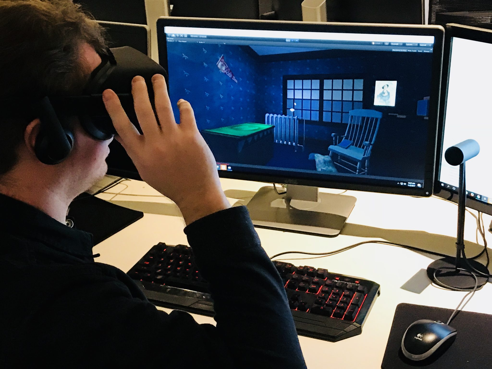

Кратко о программирование
Программирование игр — часть процесса разработки компьютерных игр (видеоигр). Программирование игр требует специализации в одной или нескольких из следующих областей, которые в значительной степени присутствуют в создании игр: симуляция, компьютерная графика, искусственный интеллект, физика, звук и ввод данных. Для многопользовательских онлайн-игр часто[насколько?] необходимы дополнительные знания, такие как сетевое программирование и программирование баз данных

Геймдизайн
Хотя основная задача программиста не состоит в том, чтобы разрабатывать дизайн игры, они часто вносят свой вклад наравне с разработчиками игр. Разработчик игры будет запрашивать мнение как производителя, так и руководства по искусству и программированию для идей и стратегий дизайна игры. Часто люди, не занимающие руководящие должности, также вносят свой вклад, такие как копирайтеры и художники. Программисты часто внимательно следят за документацией по дизайну игры. По мере развития игры меняется дизайн-документ по мере того, как обнаруживаются новые возможности программирования, а также новые ограничения.
Производство